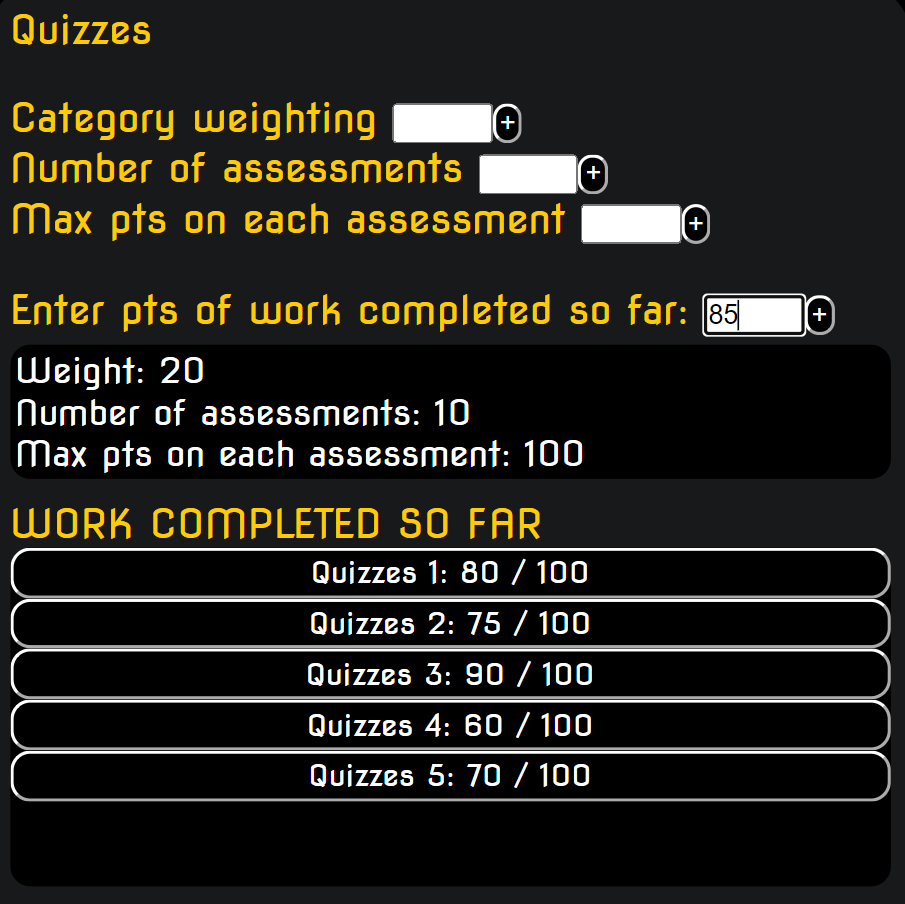

Walkthrough
Let's say it's the beginning of the semester year and you see your calculus course syllabus as follows:
Grades:
Course grades are determined from your overall total score as follows:
Homework: 40%
Quizzes: 20%
Final: 40%
There will be 10 homeworks.
There will be 10 quizzes.
There will be 1 final exam.
Cutoffs:
A+ 97%
A 93%
A- 90%
B+ 87%
B 83%
B- 80%
C+ 77%
C 73%
C- 70%
D+ 67%
D 63%
D- 60%
Course grades are determined from your overall total score as follows:
There will be 10 homeworks.
There will be 10 quizzes.
There will be 1 final exam.
Cutoffs:
Go ahead and enter
Homework
Quizzes
Final
into the categories.

Next select the first category homework by clicking on its button.
Next select the first category homework by clicking on its button.
When you click a particular category, the "Select a category" element will automatically refer you to
the category you picked. Let us first click homework and enter the corresponding values for the first 3 inputs.
We know the category weight is 40.
Number of assessments is 10.
Max points on each assessment can be assumed to be 100 if it's unknown.

Enter the first 3 values. You should see the numbers appear in the information below. Do the same for the other categories.
Enter the first 3 values. You should see the numbers appear in the information below. Do the same for the other categories.
Once the top 3 values are entered for each category,

you may click calculate.
You will be prompted "Would you like to use the default cut offs?" If your cut offs match the one in this example, you can click ok. Otherwise, click cancel and go ahead and enter your own cut offs.
After clicking calculate, notice the "Predict average %" element.
This allows you to make predictions about your average grade
on each category in which you still have work yet to be completed.
you may click calculate.
You will be prompted "Would you like to use the default cut offs?" If your cut offs match the one in this example, you can click ok. Otherwise, click cancel and go ahead and enter your own cut offs.
After clicking calculate, notice the "Predict average %" element.
This allows you to make predictions about your average grade
on each category in which you still have work yet to be completed.
to 0% and have homework at 100%, this demonstrates the
scenario in which for the ungraded coursework (in this case
nothing is graded yet) we achieve an average of 0% on
everything and full marks on hw. The results at the "grade
thermometer" show that we would achieve a 40%. This makes
sense because homework is weighted 40% of the total grade
and we have yet to input any assignments.
Suppose we want to enter some scores after we completed some homework and quiz assessments. Select the category (under CATEGORIES) in which you would like to input score(s).

When you have input the scores
you have earned so far, click
calculate again to evaluate your
current status.
Suppose we are nearing the end of the course and recently
put in our last few homework and quiz scores. Only the
final is yet to be done.

The left scale of the "grade thermometer" is the weighted
average of the remaining course categories which is determined
by your predictions using the sliders.
MIN and MAX display the lowest possible and highest possible
grade you could end up with. Note that you may end up with
different values depending on what you entered for previous
homework and quiz scores.
The difference in this case between MIN and MAX is 40% because the final is worth 40% of the grade. The tag attached to the right scale of the "grade thermometer" will be your final grade if the predictions based on the sliders are accurate.
DELETING VALUES:
You can delete individualcategories
work completed so far
grade cut offs
If you would like to delte multiple
you may want to use the clear all button.
put in our last few homework and quiz scores. Only the
final is yet to be done.
The left scale of the "grade thermometer" is the weighted
average of the remaining course categories which is determined
by your predictions using the sliders.
MIN and MAX display the lowest possible and highest possible
grade you could end up with. Note that you may end up with
different values depending on what you entered for previous
homework and quiz scores.
The difference in this case between MIN and MAX is 40% because the final is worth 40% of the grade. The tag attached to the right scale of the "grade thermometer" will be your final grade if the predictions based on the sliders are accurate.
DELETING VALUES:
You can delete individual
you may want to use the clear all button.
Explanation